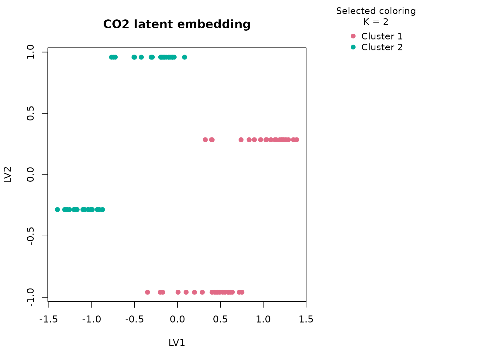
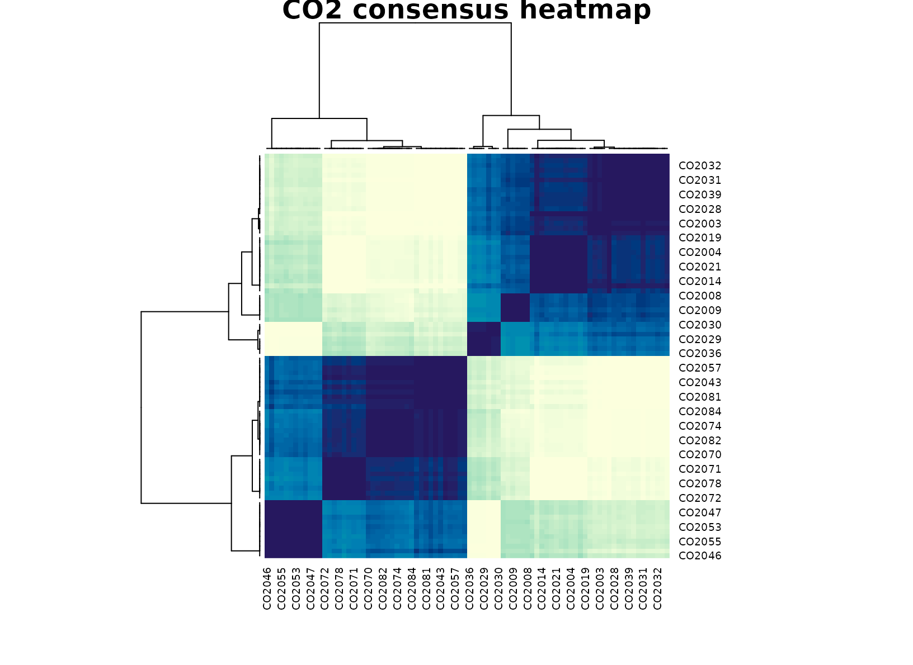

Background
CO2 contains uptake measurements from grass plants under
different treatment and plant-type conditions. It is a compact biology
dataset where continuous response values and experimental annotations
live in the same table. The key biological feature is that uptake is
observed across concentration levels, so the dataset mixes physiological
response with experimental design factors rather than giving a single
summary number per plant.
Objective
The goal is to ask whether uccdf recovers stable
photosynthetic response regimes from uptake values together with plant
type, treatment, and a coarse concentration band. In other words, we
want to know whether the dominant table structure looks like a
biologically meaningful response split rather than a mechanical
recreation of the full experimental design grid.
Data preparation
co2_df <- CO2
co2_df$sample_id <- sprintf("CO2%03d", seq_len(nrow(co2_df)))
co2_df$conc_band <- ordered(
cut(co2_df$conc, breaks = c(-Inf, 300, 700, Inf), labels = c("low", "mid", "high")),
levels = c("low", "mid", "high")
)
analysis_co2 <- co2_df[, c("sample_id", "uptake", "Type", "Treatment", "conc_band")]
head(analysis_co2)
#> sample_id uptake Type Treatment conc_band
#> 1 CO2001 16.0 Quebec nonchilled low
#> 2 CO2002 30.4 Quebec nonchilled low
#> 3 CO2003 34.8 Quebec nonchilled low
#> 4 CO2004 37.2 Quebec nonchilled mid
#> 5 CO2005 35.3 Quebec nonchilled mid
#> 6 CO2006 39.2 Quebec nonchilled midAnalysis
fit_co2 <- fit_uccdf(
analysis_co2,
id_column = "sample_id",
candidate_k = 1:5,
n_resamples = 20,
n_null = 39,
row_fraction = 0.85,
col_fraction = 0.85,
seed = 222
)
fit_co2$selection
#> $alpha
#> [1] 0.05
#>
#> $global_p_value
#> [1] 0.025
#>
#> $null_family
#> [1] "independence_marginal_null"
#>
#> $detected_structure
#> [1] TRUE
#>
#> $best_exploratory_k
#> [1] 2
#>
#> $best_supported_k
#> [1] 2
select_k(fit_co2)
#> k stability null_mean null_sd stability_excess z_score p_value supported
#> 1 2 0.5945211 0.4084903 0.05978767 0.18603075 3.1115231 0.025 TRUE
#> 2 3 0.6495645 0.5751400 0.04028429 0.07442452 1.8474822 0.075 FALSE
#> 3 4 0.9090439 0.8882409 0.04020363 0.02080293 0.5174389 0.325 FALSE
#> 4 5 0.9056215 0.8656294 0.02274149 0.03999210 1.7585514 0.075 FALSE
#> objective
#> 1 2.972894
#> 2 1.627760
#> 3 0.240180
#> 4 1.436664Results
co2_assign <- merge(augment(fit_co2), co2_df, by.x = "row_id", by.y = "sample_id", all.x = TRUE)
head(co2_assign)
#> row_id cluster confidence ambiguity exploratory_cluster
#> 1 CO2001 1 0.8589348 0.14106521 1
#> 2 CO2002 1 0.8592637 0.14073627 1
#> 3 CO2003 1 0.9296333 0.07036665 1
#> 4 CO2004 1 0.9070210 0.09297902 1
#> 5 CO2005 1 0.8989071 0.10109295 1
#> 6 CO2006 1 0.9028983 0.09710169 1
#> exploratory_confidence exploratory_ambiguity assignment_mode selected_k
#> 1 0.8589348 0.14106521 selected 2
#> 2 0.8592637 0.14073627 selected 2
#> 3 0.9296333 0.07036665 selected 2
#> 4 0.9070210 0.09297902 selected 2
#> 5 0.8989071 0.10109295 selected 2
#> 6 0.9028983 0.09710169 selected 2
#> exploratory_k Plant Type Treatment conc uptake conc_band
#> 1 2 Qn1 Quebec nonchilled 95 16.0 low
#> 2 2 Qn1 Quebec nonchilled 175 30.4 low
#> 3 2 Qn1 Quebec nonchilled 250 34.8 low
#> 4 2 Qn1 Quebec nonchilled 350 37.2 mid
#> 5 2 Qn1 Quebec nonchilled 500 35.3 mid
#> 6 2 Qn1 Quebec nonchilled 675 39.2 mid
aggregate(
cbind(uptake, conc, confidence) ~ cluster,
co2_assign,
function(x) round(mean(x, na.rm = TRUE), 2)
)
#> cluster uptake conc confidence
#> 1 1 33.54 435 0.89
#> 2 2 20.88 435 0.90
table(co2_assign$cluster, co2_assign$Type)
#>
#> Quebec Mississippi
#> 1 42 0
#> 2 0 42
table(co2_assign$cluster, co2_assign$Treatment)
#>
#> nonchilled chilled
#> 1 21 21
#> 2 21 21
table(co2_assign$cluster, co2_assign$conc_band)
#>
#> low mid high
#> 1 18 18 6
#> 2 18 18 6
round(prop.table(table(co2_assign$cluster, co2_assign$Type), margin = 1), 3)
#>
#> Quebec Mississippi
#> 1 1 0
#> 2 0 1
plot_embedding(fit_co2, color_by = "selected", main = "CO2 latent embedding")
plot_consensus_heatmap(fit_co2, main = "CO2 consensus heatmap")
Discussion
The selected two-cluster solution is biologically plausible because
it usually separates a higher-uptake regime from a lower-uptake regime
while only partly aligning with Type and
Treatment. The concentration-band table is especially
helpful here: high-concentration observations are enriched in the
stronger uptake cluster, but they do not define it completely. That
means the consensus solution is responding to a joint pattern in
response magnitude and experimental context, not just to one categorical
field.
This is exactly where a typed consensus workflow earns its keep. A purely numeric clustering on uptake and concentration could be dominated by the concentration axis, while a factor-heavy approach could overstate the design variables. The current result is a compromise: it identifies broad response modes that remain stable across resampling.
Interpretation
For CO2, the recovered groups are best interpreted as
stable photosynthetic response modes. A cautious reading is that one
cluster corresponds to stronger uptake under favorable response
settings, while the other collects weaker uptake measurements across the
same experimental space. The important point is not the exact label
count; it is that the table supports a reproducible two-regime summary
that can guide downstream biological visualization and exploratory
comparison.